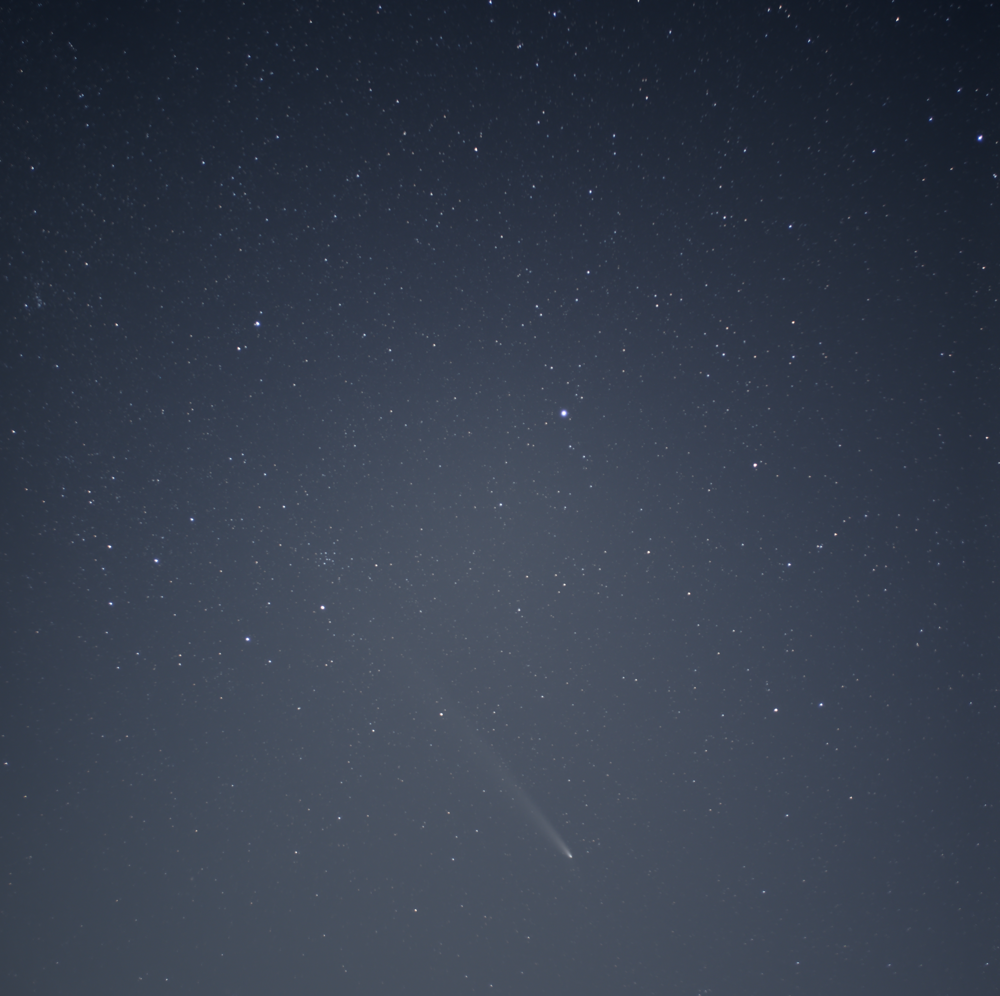

Interests
- Computational astrophysics and fluid dynamics
- Working towards a more sustainable future
- Night sky, street and landscape photography
Personal Portfolio
I am an astronomy researcher and developer working on statistically rigorous analysis pipelines, reproducible scientific tooling, and visual communication. This portfolio combines my research work and photography practice in one cohesive space.

Projects that I worked on or am currently working on.
A list of my published papers and preprints.
Galleries showcasing my personal passion for capturing the beauties of earth and space.